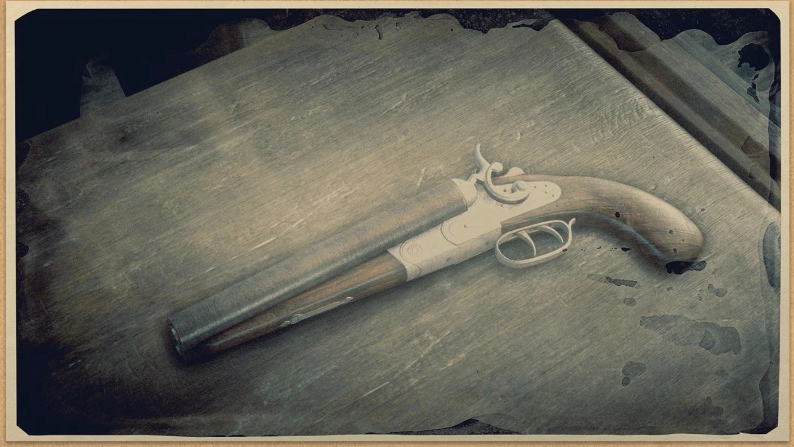
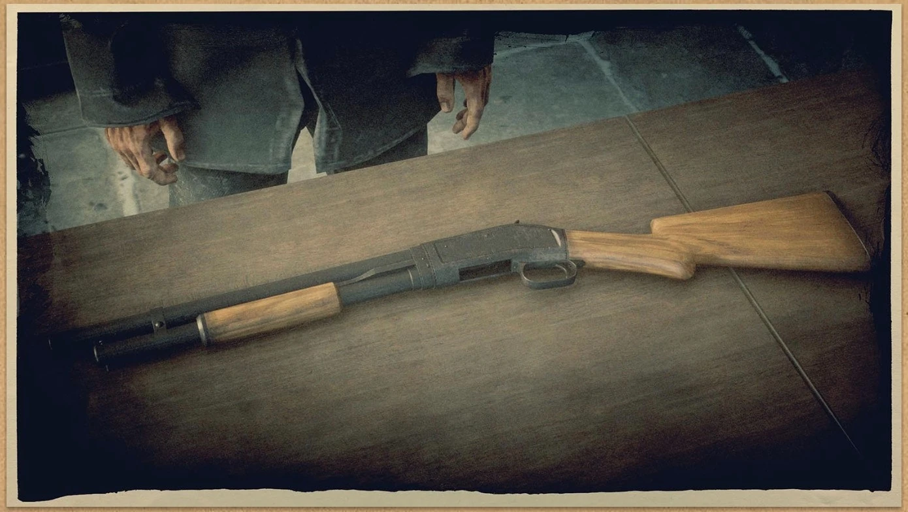
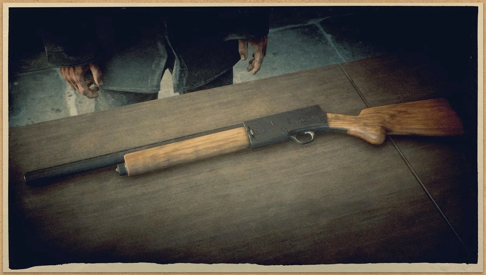
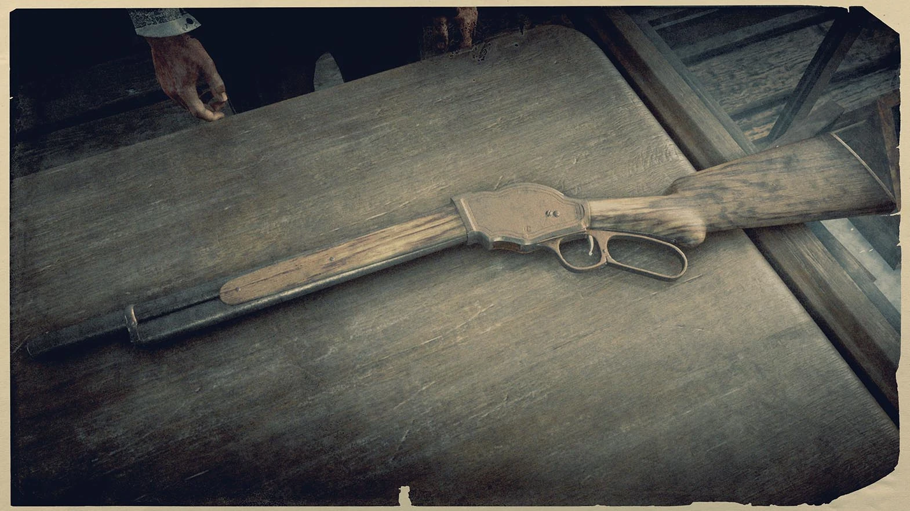

SHOTGUNS
Powerfull guns with limited range,capable of firing shells,slugs,incendiary and explosive ammunition
Sawed off
The Peeters & Janssens Sawed-Off is a versatile shotgun that can be used easily with one hand or dual wielded to great effect. Rough and deadly, but widely inaccurate, this weapon is ideal for close quarter combat on foot or on horseback. This gun has an ammo capacity of two rounds and can use Regular Buckshot, Incendiary Buckshot, Slug and Explosive Slug shotgun ammo. Dual-wielding it with another sawed-off shotgun is highly effective, allowing the quick and brutal elimination of anything that stands in your way, man or beast.
Double barrel shotgun

D.D. Packenbush's Double-Barreled Shotgun is the trailblazer's choice. Powerful and deadly at close range, this gun is capable of firing off two shots in quick succession, dropping nearly any target instantly. This gun has an ammo capacity of two rounds, and can use Regular Buckshot, Incendiary Buckshot, Slug and Explosive Slug shotgun ammo.
Pump action shotgun
The high-powered Lancaster Pump Shotgun has a large ammo capacity and quick reload capacities. Despite average accuracy, this gun will hold true should you find yourself confronted by wild beast or man in close combat. This gun has an ammo capacity of five rounds and can use Regular Buckshots, Incendiary Buckshots, Slug and Explosive Slug shotgun ammo.
Semi auto shotgun
The Brun Et Fabre Semi-Auto packs both power and speed into one shotgun. Featuring a high rate of fire, quick reloads, and adequate magazine size, this shotgun is perfect for short-range combat against multiple targets. This gun has an ammo capacity of five shells and can use Regular Buckshot, Incendiary Buckshot, Slug, and Explosive Slug shotgun ammo.
Repeating shotgun
The Lancaster Repeating Shotgun is a well-rounded gun that uses the same lever-action system commonly found on repeating rifles. The large ammo capacity gives the shooter the luxury of accuracy while maintaining the power ideal for close-quarter encounters. This gun has an ammo capacity of six rounds, and can use Regular Buckshot, Incendiary Buckshot, Slug and Explosive Slug shotgun ammo.